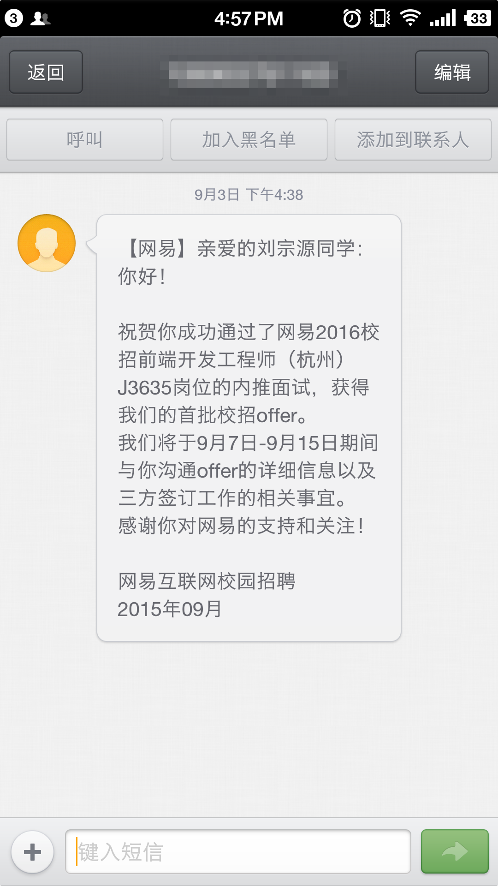
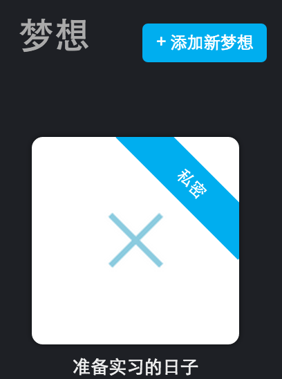
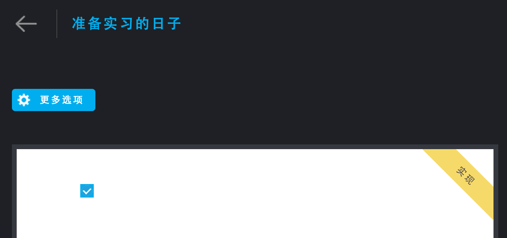

前言
这篇文章对这3个多月(5月中旬到8月下旬)进行简单的总结。
数字缩影
- 8次面试
- 4家公司
- 3次失败
- 2个项目
- 2本技术书籍
- 瘦了8斤
- 1次旅行
- 1次重生
我的offer公式
运气 + 大环境 + 努力 + 总结 = offer
运气：
面试官没有问我算法、操作系统方面的知识，不然我就死翘翘了…
大环境：
网易今年扩招，前端今年大热，如果我做后端，仅凭一年的编程经验，绝对阵亡。
努力：
这三个月一直在补基础，除了中途有一次旅行，没有给自己放过长假。
总结：
简书和本博客均有记录，还有我几乎每天会在「念」上做日常总结。
寄语
更努力
感谢
- 感谢网易
- 感谢自己
- 感谢张楠
- 感谢亲朋
- 感谢：
- 念
- aTimeLogger
- 多态
- Chrome
- Sublime Text
- Dash
- 有道词典
- MDN
- 知乎
- Stackoverflow
- Segmentfault
- Hexo
- QQ音乐(接下来打算用网易云音乐lol)
End
Bye my dream!

